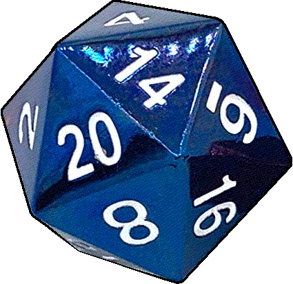

Systems used for Combat, Messages, and General Actions
As you may be able to gather, dungeon crashers is a roleplay with a varying amount of tabletop elements to it, depending on the situation.
Its rather fast and loose, to account for the sheer amount of different situations that can occur in such an ever-expanding setting. What lies at the core are two or three main modes: Freeform mode, Efforted mode, and Combat mode. Each one is generally more systematically crunchy than the last, and the level of complexity tends to vary depending on who is running things.
During most downtime (which is most of the time when an event isn't planned or anything), things are by default in Freeform mode. Now, this does not mean you can do anything anything, there are standards to storytelling at play, enforced by social contact. It is important to have a good relationship with those you write and rp with, or somebody involved isn't gonna have a good time. The honor system is used to a high degree here.
There are two styles of play that can be used in addition to the three modes (granted that in-setting limitations don't make it impossible): Location style and Memo style. One on one messages technically fall under memo style, though becuase of the social nature of this, group chats, or "memo"s are the default for memo style.
Memo Style
Following the example of Homestuck, online communication between characters is important and often can be employed without even signaling the location of your character elsewhere. If you take away all of the locations, the group's public memo will be at the heart of it. There is also a "private" memo that is used between trusted members, but it is never mentioned in the public memo for obvious reasons. It is here that characters may discuss sensitive information that they would not want their enemies to hear. In contrast, the public memo is said to be watched by numberous unknown accounts, with the excuse that the userlist is either difficult to trust or impossible to see. In the current iteration of the setting, the chat client of choice is called "Pestercord", owing after the fact that the roleplay itself is done on Discord, in a manner reminiscent of Pesterchum. Unfortunately, it does not have colored text like pesterchum did, but it does have emojis!
Example of memo usage:

Private messages
Private messages are all done in the same channel, as they usually don't occur very often. If there are multiple private conversations going on, it is up to the rper to make sure their characters have appropriate gaps in their working knowledge where they should not be able to see. This space may also be used for telepathic private messages, as well as online private messages.
Example of a private message:

Location Style
Location style is a more traditional method of roleplay, which takes location into account. Each major location has its own channel, with the major ones having permanent channels and the minor areas alternating use of the two other location channels. If there's two different scenes going on in the same major location that are far enough from each other, one of the scenes can be moved to an other location channel. When moving from a major location to another location, its best practice to link to the channel to be swapped to, especially when other characters are following yours.
Generally, location is pretty important, as it will determine the range of interaction with various people, places, and things. If you are currently on the second floor of a building, unless you have a clearly defined method of doing so, you're generally not going to be able to pick up a flowerpot in the basement. In the same vein, you'll likely be unable to speak to somebody too far away unless you have a defined method of doing that. Various methods of telepathy count as viable methods for long distance communication, which can be used in a location channel if the characters involved are in the same major location.
As for navigating spaces, there should be a variety of maps *located here*, though if there isn't, then I still need to make that webpage. in the meantime, there are minecraft models of the greater charcherry area and Desertia town, which can be viewed from outside of the server Here. If you wish to enter the server proper to tour and explore (out of character), please follow the instructions pinned in the minecraft creative channel.
Generally, if somebody that has not been in the active location before enters, it is usually the responsibility of those who do know the area to provide as much useful navigation information as needed. An "establishing shot" message can also be written for this purpose, to both set the tone and highlight common setpieces.
Most locations are under the jurisdiction of a particular person when it comes to changes made to them. For small out of the way stuff, its usually no big deal (unless otherwise stated) to do things that may change something. If its something that may impact things that other people have made, you will need to give prior notice. The greater the change, the more forewarning should be given. If you are vetoed from performing a destructive action, you will not be able to do it, under threat of breaking the rules. Radical changes to the setting and/or a major location also count under this.
If you don't know who runs a particular location, please ask in the backstage channel. Always read the channel descriptions for major locations!
Example of Location style in Freeform mode:
(Note: both of these characters are written by the same writer, so what may appear to be godmodding is actually just nonstandard character action separation)

Efforted mode
This is the in-between of Freeform mode and Combat mode. The main difference between Efforted mode and Freeform mode is the use of dicerolls to determine success of actions which take effort. Dicerolls are performed by the use of the dice maiden bot, while in the Den of the Maiden channel.
The standard die for all-purpose use is the d20, a twenty sided die. Dice Maiden can roll a die of any amount of sides up to 100, and you can specify the amount rolled at the same time, but they will be sorted by value rolled, so its not useful if you have to roll multiple separate things all at once. You can also add a reason message after the roll to make the purpose of the roll known and undeniable.
You can also add modifiers to your roll, for things like proficiency, ability to do the task, any magical, special, aspect related or other bonuses you might be able to use, and other stuff. You can also convey hindrances with negative modifiers. There is also a way to roll with advantage or with disadvantage, which is useful if you know how to use it.
Please use !roll help command, or check the pinned messages in Den of the Maiden for detailed instructions on how to use the dice maiden.
How does one know what to use however? Because of the nature of the system, it is eyeballed for the most part. If all else fails, just roll a basic d20.
By default, ten and above is success, wth 9 and below being failure. the further from the middle, the more extreme the result of the roll.
Do remember that while achieving a maximum roll, it does not guarantee absolute success if you are not calling the shots. If somebody is running the area, they decide how far your roll stretches in most cases.
Do note that you are likely to fail your roll if you just roll a d20, unless you're lucky, so be prepared to fail if you do roll a plain d20. It is heavily suggested to take inventory of any advantages at hand that you can add for modifiers to this. Most advantages will be between +1 and +5, depending on how influential they are to the situation.
Example of Efforted mode:
(note: this was before the Den of the Maiden channel was created)

Combat mode
This is a more advanced version of Efforted mode. This section includes types of rolls that will be used more often in this mode. They can still be used in Efforted mode, but likely will be less common.
Example of Combat mode:
(Note: this was before the Den of the Maiden channel was created)

Contests
When your action may clash with another character's action, the two of you will need to roll against each other, each rolling the appropriate die and adding your appropriate modifiers. Generally, whoever rolls higher will succeed in one of these. This can be used to support many kinds of clashing actions, including but not limited to simultaneous attacks. If both sides tie, then neither one succeeds. The higher the roll, the higher the intensity.
Number as Coordinate
(special roll method)
This is a special kind of roll used for when something occurs in a very specific spot that a character might be located in, often used for area of effect attacks. Generally, everyone rolls a d20 without modifiers and the number indicates a simplified coordinate location. If the attack's value matches the target, the target and the attack will connect. Calculate the effect accordingly. For larger attacks, larger ranges can be used for this.
Fighting Rules
- Turn order vs random enemies is "Player turn" and then "enemy turn."
- Player vs Player turn order is dictated by descending value of initial rolls.
- DM decides what happens upon each roll when battling enemies.
- Characters only get one action per player turn, and they must wait to act until their turn comes again.
- If you're being slowed, you get disadvantage (roll 2d20 and take the lower number.)
- If you're being sped up, you get advantage (roll 2d20 and take the higher number.)
- Please provide a description of what your character is trying to do instead of just throwing out non-descript rolls. The DM will thank you.
- Player vs Player fights should be DM'd by a neutral third party, one of the @GODS should be available to officiate if need be.
Health and Defeat Handling
When it comes to health, this is largely abstracted through description and percentage values. When announcing health amounts, it is best to announce the percentage of health remaining. This amount cannot go above 100% for consistency sake, but the amount that's chipped off can be modulated as makes sense for the occasion. lowering health percentage to zero will put the target in a vulnerable state. In terms of pokemon battles, this will be counted as fainting.
At times, you will be given the option to do a lethal finish, but this will usually only be in the context of a boss battle. If you do not have permission to kill a character, they will not die by your hand.
If a godtier character receives a lethal blow, the judgement clock will be put into effect, where the target will be judged either as Heroic, Just, or neither.
Generally, there needs to be a group consensus for this.
The qualities of Heroism and Justification are relative to the narrative being told, assuming that the bulk of the players are the protagonists. If a death is sufficiently cheap or unsatisfying, this can possibly override a Heroic/Just judgement, but this must be agreed upon by the group. In the case of morally gray characters, or otherwise lack of consensus, it is very possible to get a judgement of neither.
In such a case that a judgement of neither is reached, the target is healed completely and all status ailments are cured, unless narratively poigent to keep them. For example, if somebody loses their hand in battle, dies, and then gets a godtier clock judgment of neither, in most cases, the hand will reattach. However, if the player wants the hand to stay detached, or if being an amputee is an important part of their character, or whatever else, they may keep it from being healed as desired. This can also be used for preserving cool battle scars. This can also be applied in an incomplete manner, interpreted as a healing factor rather than a magic fix. This cannot be used to render the target in an undead or continuously dying fashion.
If the target is in a continuously harmful location at time of revival (such as the center of the green sun, for example), they will be pushed towards the closest available safe zone while still in revival glow mode, during which they cannot be hit.
If a Heroic or Just judgement is reached, the player will be pronounced dead. The body of a godtier will not decompose under natural means. You will need to figure out what to do with the body. If the dead has not been revived by a life player before, they can potentially be revived with this method, but only if they want their character to be revived. If the one writing for the dead character changes their mind later, the life player can always try again with permission. For balancing reasons, Life players and their amount of paitience for others is rather limited. Not all of them do revivals, as it is largely a known technique of the maid class.
(Note: This guide will not offer specifics on mythological role analysis, as that is something best done collaboratively, and with narrative intent in mind.)
There are potentially other methods of revival available, but those are left undocumented here as an exercise to the writer.